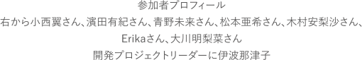

目元に特化することに12年以上携わってきた会社が、今までの知識や経験を元にこれまでになかったまつ毛美容液を作ることになり、発足したプロジェクト。今回は第1回目の座談会において美容インフルエンサーたちの意見としてまとまった
①伸びる、太くなる、ボリュームが出る、そして今あるまつ毛をケアできるもの
②しみない、色素沈着しない、目にダメージのない安全なものに
③パッケージはシンプルなもので、価格帯は上限8,000円まで
をもとに、試作品を開発者が作り、実際プロジェクトメンバーで1カ月間試してみました。 第二回目座談会はその試作品に関しての意見交換からスタートします。